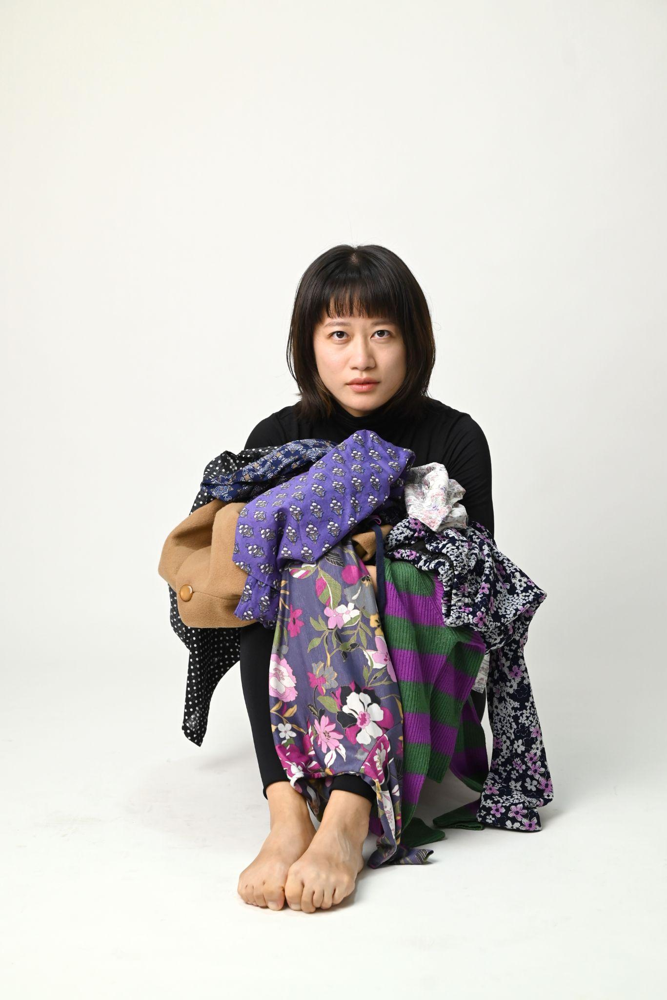
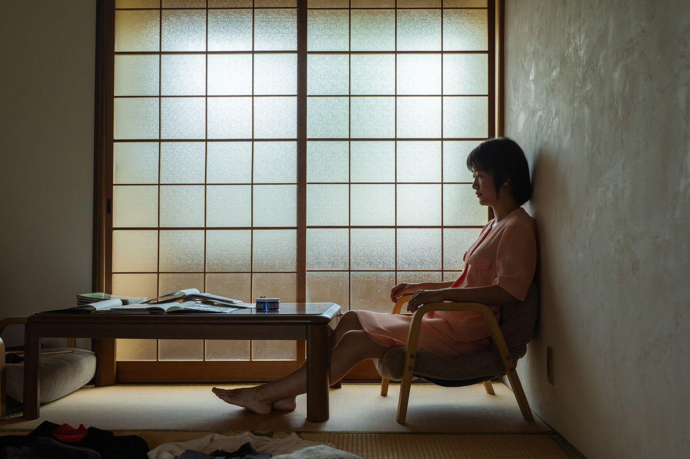
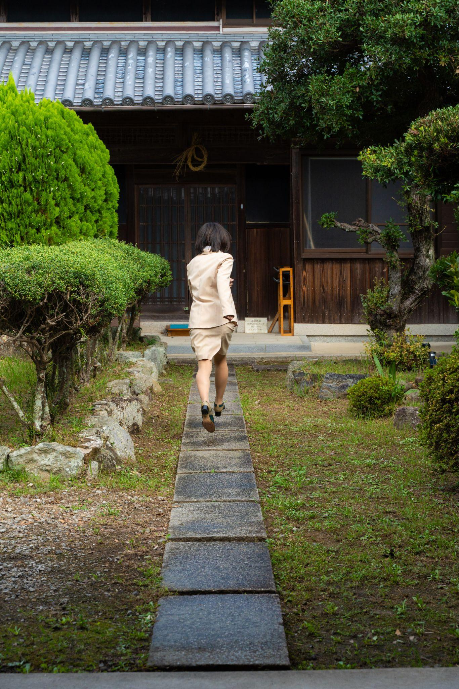
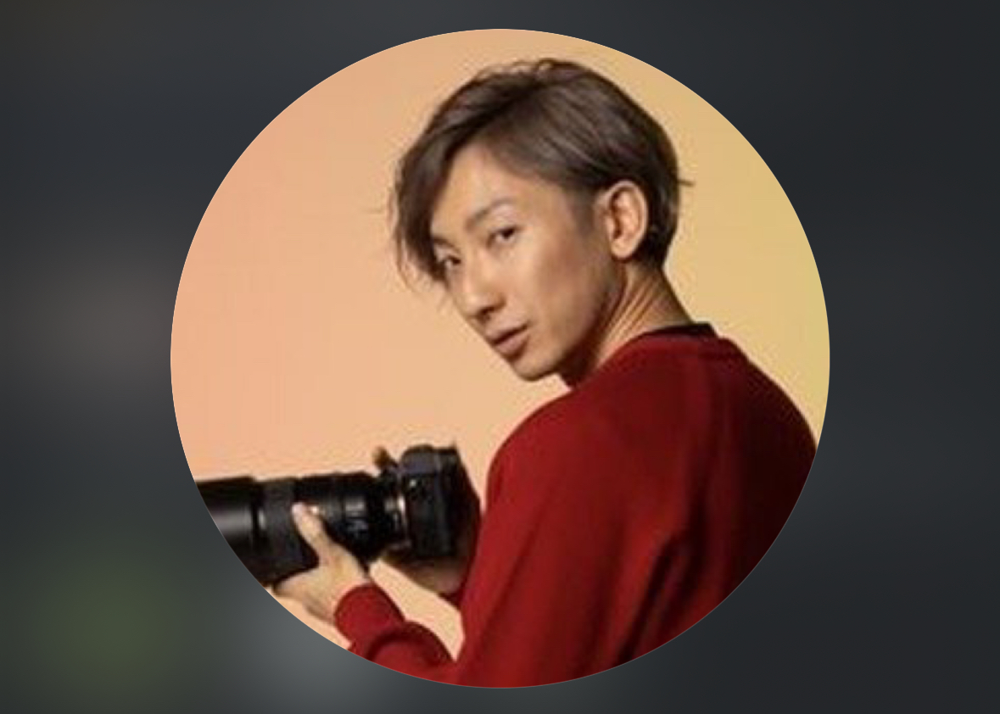
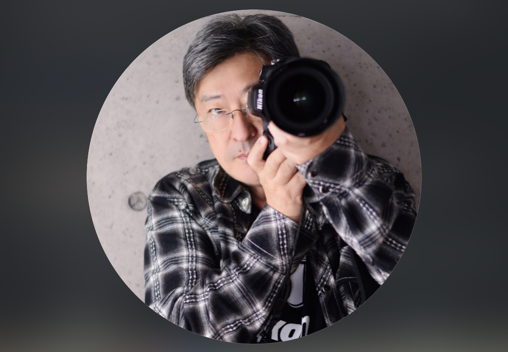
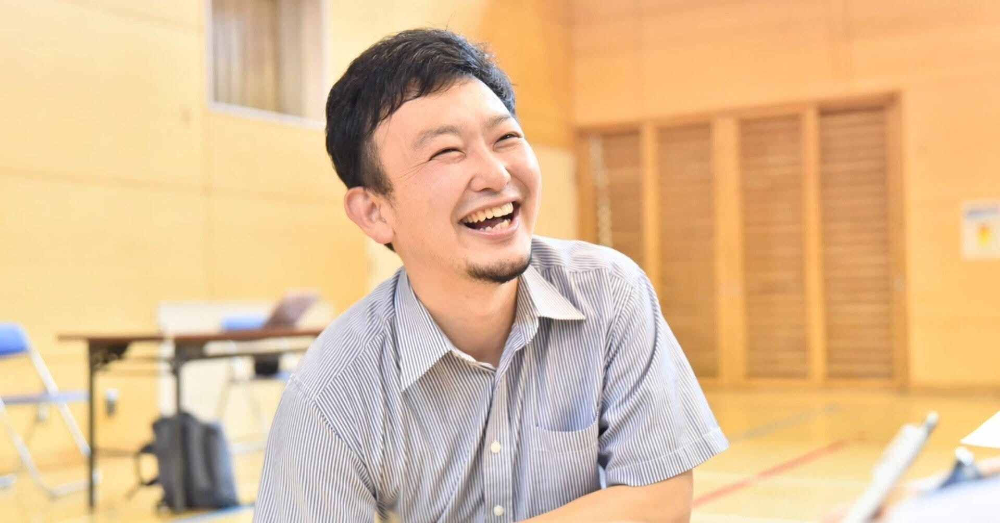
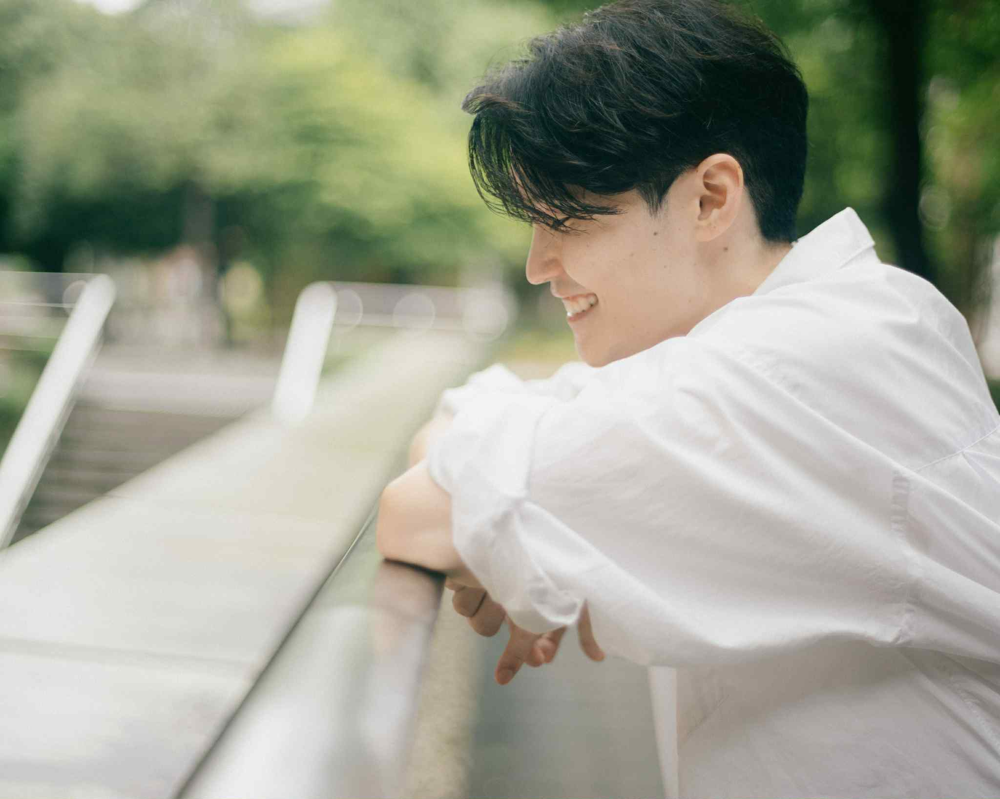
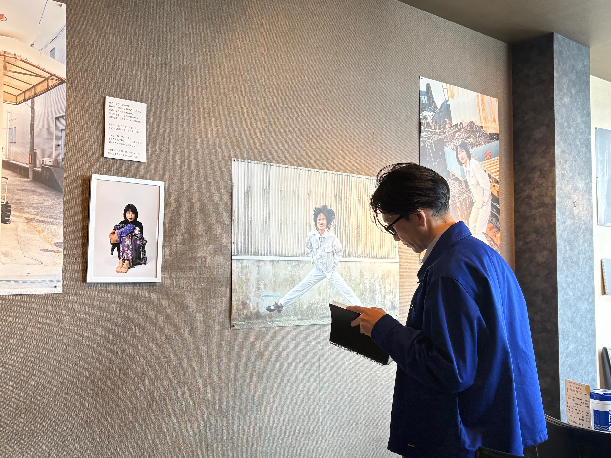
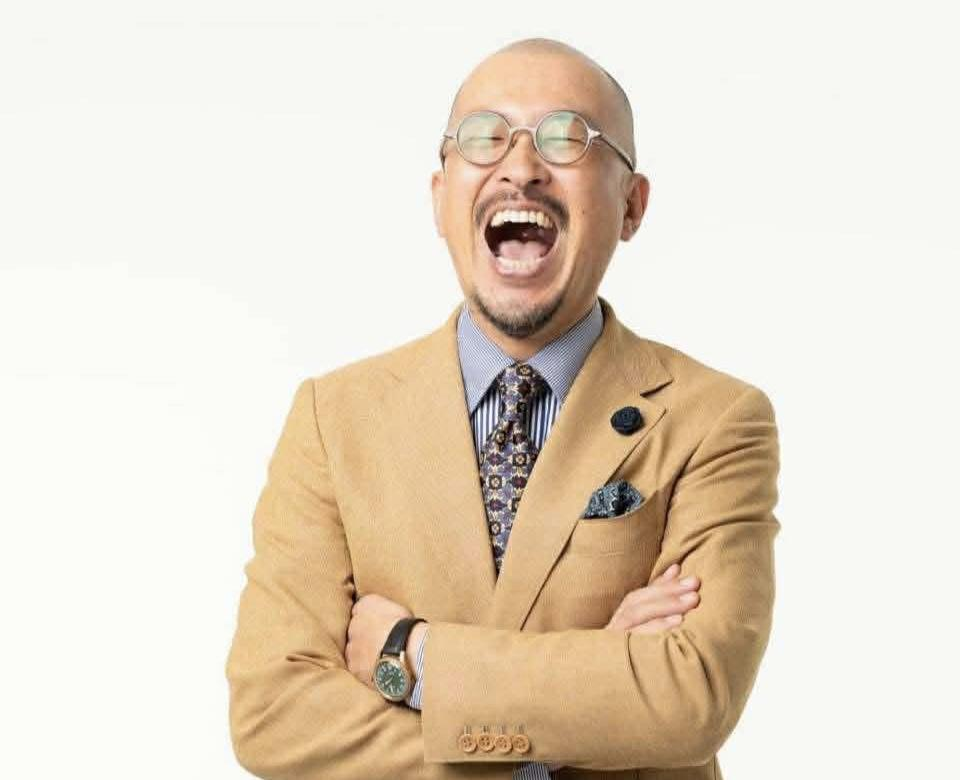
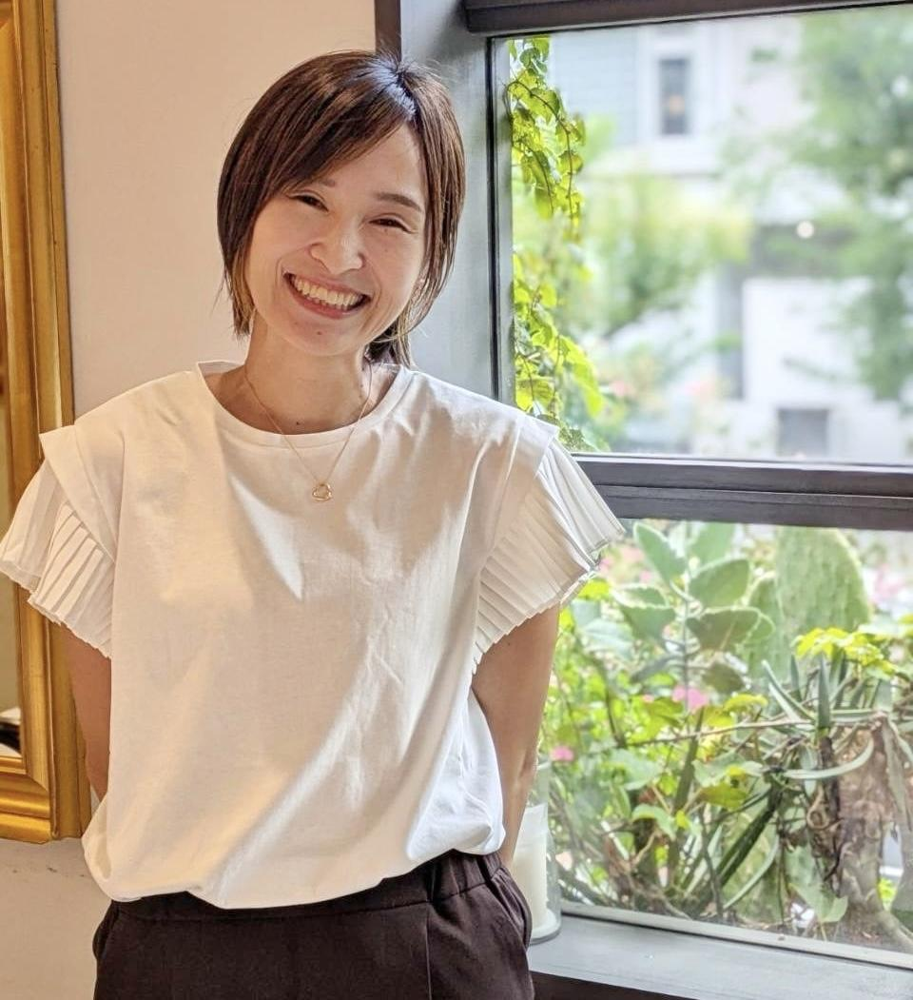

Event No.2 ｜ 2026.6.20–21
— 親子でたどる、記憶の展示 —
2026年6月20日（土）〜 6月21日（日）
神奈川県 大和市 鶴間 1-9-17 BIG BLUE
小田急江ノ島線 鶴間駅下車 徒歩3分
入場無料 申し込むStory
本展は、主催なつほが、20代の頃の父の作業着を実際に身にまとい、記憶と向き合いながら撮影した写真作品を中心に、参加者それぞれが親の服を着ること、過去の場所をめぐること、言葉として想いを書き残すことを通して、「親との関係」や「自分自身」を見つめ直した【記録】を展示する写真やエッセイの展示です。
今から語られるのは、父の作業着から始まる、家族の再生の物語。
―――――――――
「お前、お前！！」
体がすくんで、その後、衝撃が走る。
憎いという気持ちと、徹底的に嫌ってやるという決意。
思い返せば思い返すほど、胃がよじれるような感覚と、
悲しさを抱えた怒りが、込み上げてくる。


あなたを何度も足止めする「記憶」——
それが、たった一枚の服で癒せるとしたら。
その服を手に取った瞬間、あなたの中の"時間"が静かに動き出すかもしれません。
Workshop
6月・神奈川県で行われる第２回『記憶を纏う』展示では、15名の作家による人生ストーリー作品展示に加え、
感じ・悩み・受け止め・表現することに特化した５つのワークショップを同時開催いたします。
『記憶を纏う』では、あえて鑑賞者を鑑賞者のままでは帰しません。
鑑賞者から表現者へと、ゆるやかに、しかし確実に変化しうる場所として設計しました。
ここにくれば、何かが変わる。そんなパワースポットのような場所で、お待ちしています。
からだで感じる、こころの気づきワーク
10歳程度より参加可。定員8名
バレエの先生による、身体で遊んで感じて、こころの気づきを楽しむ体験型ワークショップ。
主催：内田愛美（バレエ教師）
「身体で遊んで表現する。『身体ってこんなに正直だったんだ！』発見と一緒に楽しみましょう。ダンス未経験の方歓迎。」
ナラティブ絵本®︎（ミニ）
15歳程度より参加可能
自分の物語を絵本にする、語りと創造のワークショップ。
［主催者プロフィール：お名前・活動内容・一言メッセージ］
こども表現ワーク
「かいたり、みにつけたり、パチンパチン」
子どものみ参加可能
子どもが描いて、着て、感じる、のびのびとした表現の場。
主催：ささきゆう（保育士・海を愛するダイバー）
「作品なんて気負わず、楽しんでみよう！」
モヤモヤ燃やしちゃおう
誰でも参加可（随時開催）
心のモヤモヤを言葉にして、一緒に解放するワーク。
主催：広島の夏帆（教育とアート・心に潜る瞬間が大好き）
「さあ、モヤモヤに形を与えて、本当に燃やしちゃおう」
問いかけクッキー屋さん
誰でも参加可（随時開催）
実際に食べていただけます。友人・親子でいつもの私じゃない会話が始まっちゃう体験。
主催：波木はなこ（現役大学生・超面白くて可愛くてかっこいいクッキーをつくっている）
アイコミューズとバレエのセッション
誰でも参加可
アメージンググレイスとバレエ。1日の締めくくりに相応しい癒しの時間。
主催：Ai Ogushi
「一緒に口ずさんだり、踊ったりしよう。」
ギター LIVE
誰でも参加可（各日1回開催）
心に響くギターの音色でひとときの癒しを。
主催：藤原勝熙
今回は、お子さんと参加可能なワークショップ、そして子どものみが参加できる表現ワークをご用意しています。
親子での帰り道、今まで話したことのないようなご自身の内面や、
お子さんの感覚をじっくりと聴きあいながら帰り路に着く——
そんな親子の絆を深める場としてもご用意しています。
Schedule
展示…終日入場無料 自由に鑑賞いただけます
ワークショップ…からだで感じるこころの気づきワーク、ナラティブ絵本®︎（ミニ）は事前予約・チケット制（大人1人 2,500円 ／ 大人1人と子ども2人まで 3,000円）
6月20日（土）
10:00 開場 18:00 閉場
こども表現ワーク「かいたり、みにつけたり、パチンパチン」
モヤモヤ燃やしちゃおう
哲学少女の問いかけクッキー
→ 終日、随時開催
6月21日（日）
10:00 開場 18:00 閉場
こども表現ワーク「かいたり、みにつけたり、パチンパチン」
モヤモヤ燃やしちゃおう
哲学少女の問いかけクッキー
→ 終日、随時開催
Artists
作品参加の皆さまが何に共感し、何を求めて作品作りに飛び込んだのか——
『記憶を纏う』の根源的な考え方はコチラから。
About Memory
『記憶』は変えられない
『記憶』はいつまでも私を支配する
『記憶』は私が愛されなかったことを、壊れたレコードのように繰り返し再生してくる
私もそうでした。記憶は変えられるわけがないと信じて、思い出さないように、心の奥底に無理やり追いやっていました。
服が記憶のトリガーになり、タイムスリップする。今を生きる自分が、若かりし頃の親に会いに行く。
家族の歴史、父の気持ち、母の状況——やっと、思いを馳せることができる。
自分という人間は父親50%、母親50%から成り立っている。どちらか一方でも否定すれば自分の半分をなくしたまま生きることになる。
自己否定と愛されることへの渇望。しかし、私たちはもう『記憶』に立ち向かうことができる。
『記憶を纏う』は、「服」「写真」「言葉」を通して家族の記憶を癒すアートプロジェクトであり、
同時に、見る人自身を映す鏡のような存在です。
この作品を鑑賞し、参加することは"誰か"への支援ではなく、
まだ抱きしめていない"自分"への愛のご褒美なのです。
撮影された写真、つむがれたエッセイにはその人の人生が刻まれます。
『記憶を纏う』は癒しであり、祈りであり、再生の記録になり、そして、孫の代に引き継ぐ伝記になるのです。
Voice
「展示の空気の中で、幼い自分の泣き声が胸の奥に響いた。作品の前で、静かに泣きました。」
40代・フリーランス・女性
「なんとも言えない感情がわいて、亡くした両親が心に浮かんで、涙をこらえきれなかった。ただ、これだけは分かる。私はもっと両親と話したかった。」
60代・主婦・女性
「父の作業着の話を読んだとき、亡くなった祖父の匂いを思い出しました。見るというより、心に触れる展示です。」
50代・中学校教員・男性
「もっと家族の歴史を知りたい。おばあちゃんに会いたい。家族のことを聞きたい。初めてこんな気持ちになりました。」
30代・看護師・女性
「あの写真を見てから、母に初めて"ありがとう"とLINEしました。まだ子供はいないけれど、私もやってみたい。」
20代・ライター・女性
Safety
確かに、人によっては、ご自身の経験と重ね合わせて、様々な想いを感じられる可能性がございます。
みなさまの心理的安全性と、ご自身の記憶に触れるという挑戦へのスペシャルフォローとして——
会期終了から1週間、専門のカウンセラーによる相談窓口を設置いたします。
会場で感じたこと、言葉にならなかった思いを、安心できる場でお話しいただけます。
詳細は会場にてご案内、または公式LINEよりお気軽にお問い合わせください。
Online
企画にも、エッセイにも、心揺さぶられ、一目見たいと思う。
けれども、様々な事情で来場できない——そんな方に「特別なご案内」です。
作品をオンラインで鑑賞できる解説付きLIVE配信に参加いただけます。
Support
サポーター様には、あなた自身の人生をアートにする『ナラティブ写真集』を体験いただけます。
ワークショップ参加・オンライン鑑賞の方限定で、『記憶を纏う』コミュニティにご招待いたします。
このコミュニティでは、定期的な瞑想などを使ったワークや、展示参加の優先案内を行います。
Funding
Join Us
もし、あなたの中にも「まだ癒えていない記憶」があるのなら。
あなたの支援が、あなたの物語が、「誰かの記憶を癒す灯」になります。
家計の解説書でもある「記憶」を、子に、孫に継いでいきましょう。
Thanks
心より感謝いたします。みなさまの「もちろん助けるよ！」の言葉に何度救われたかわかりません。


Profile
ウロコドロップ
夏帆
広島市安佐南区でアート企画を行う今回のメインモデル。広島女学院中高卒。広島大学にて、学びのデザインを研究。就職後、結婚、出産。しかし、娘を産んで1年6ヶ月後、自身の体調に異変が起こり、指定難病と診断を受ける。
「大切なことは生きているうちに」と決意。アートと心理学を横断し、家族や記憶のテーマを追求し始める。31年の人生で受け取った愛を、次世代に繋ぐべく記憶に向き合う。
Support
各方面からの応援コメント
芸術家でもない、何の才能もない——そんな私が死を見て始めた家族の『記憶』と向き合うアート。
荒削りながらも、たくさんの方に応援していただいています。
チケットをすぐに申し込む

喜多 恒介 さま
一般社団法人 高校生みらいラボ 代表 ／ （株）キタイエ エグゼクティブコーチ
開催、誠におめでとうございます。「人は本当に望む方向に人生を変えることができる」ということを、夏帆さん自身が今、証明しようとしています。 私たちのコーチングもアートも、その本質は一緒です。自分自身に眠っているルーツ、可能性、ポテンシャルをどれだけ引き出し、表現していくか。 この夏帆さんの挑戦に触れた皆さんが、いったいどんな変化を起こしていくのか。一人のコーチとして今からそれがとても楽しみです。

koh Akao さま
ライフコーチ ／ 写真家
『記憶を纏う』が提供するような、魂に触れる体験を言語化することは、少々野暮なのかもしれません。思考の枠を超え、直感で感じ取るアートの力こそが、止まった時間を動かします。なので、心が触れたなら、まずは理屈抜きで会場に足を運んでみてください。
その上で、今回「期待の声」のオファーをいただき、プロコーチであり表現を追求するものとして、このプロジェクトから感じたことを、心を込めて言葉にさせていただきます。
私はプロコーチとして、家族との確執や怒りといった記憶に足を止められ、本来歩みたい人生を歩めずにいる方を多く見てきました。この痛みは、言葉や理論だけでは癒せません。必要なのは、「私は愛されていた」という揺るぎない痕跡に触れる体験であり、その証拠を集め直す、内省の旅です。
夏帆さんのアートプロジェクトは、父の作業着という「服」をトリガーに、写真と言葉で記憶を再構築し、過去の愛を再確認します。作品作りを通して、記憶の深部にある愛の痕跡を掘り起こす。これは、過去の自分を許し、未来を創造し直すための真摯で勇気あるプロセスです。
この展示は、来場者一人ひとりの心の奥にある「眠り続けた幼い自分」を抱きしめる鏡になるでしょう。あなたの記憶が癒され、人生の傷さえもが、実は愛の証だったと気づく瞬間が、この広島で生まれることを心から期待し、応援させていただきます。

大中 啓嗣 さま
夏帆さんの展示を観るのは、覚悟が要る。いちばん近くていちばん遠い「家族」という存在に、真摯に向き合おうとする彼女の文章は、時として残酷だが、それ以上に優しい。
後ろを振り返る為にも、前を向く為にも、覚悟が要ることが、夏帆さんの文章からは伝わってくる。「家族」に限らず、これほどまでに真摯に他者と、そして、なによりも自分自身と、向き合ったことが私にあっただろうか。
文章を読み、写真を見つめ、夏帆さんの生き様を観ていたつもりが、気がつけば自分の生き様を見つめはじめている。夏帆さんの展示を観るのは、覚悟が要る。が、その覚悟だけが、生きてゆこうという意志へと私をつなげてゆく。

坂田 聖一郎 さま
（株）ドラゴン教育革命 代表取締役 ／ プロコーチ養成講師
私はアートが嫌いだ。昔から図工や美術が苦手だった。手先は不器用。人よりも時間がかかるが、その割に出来栄えは今ひとつ。いつしかアートは「私とは縁遠いもの」として決めつけていた。
夏帆がこれまでどんな人生を歩んできたかは詳しくは分からない。でもきっと、アートが夏帆を救ってくれたはずだ。そして、アートを通して夏帆の人生に触れることができるはずだ。
私はプロコーチ。対話を通してクライアントの人生に触れられる最高の仕事だ。夏帆はアーティスト。作品を通して彼女のあり方生き方に触れられる。夏帆の人生に触れたい。そう思った方はぜひ広島に足を運んでみてほしい。いや足を運んでください。いや行ってやってください。お願いします。
大野 佐也加 さま
声で人生を変える起業コーチ ／ Mrs & Mr of the year 2025 徳島大会グランプリ
人は絶望の淵に立たされた時、何を選択するのか？どんな淵に立たされても、私たちには選択する力があります。
力強く、賢く、逞しく、私たちは「前を向ける」のです。そのことをこの個展で伝えています。
そして、誰よりも苦しんできた人たちが、誰よりも前を向いてきたこの「広島」という街で開催することに、私は大きな意義があると感じています。

宇崎 優子 さま
それまでほぼ接点のなかったなつほと、ひょんなことからZoomで話すことになった。「個展やりたいんだよね」そう言葉を紡ぐ彼女のエネルギーが本当に素敵で。初めましての画面越しに、私は精一杯のエールを送った。
なつほの経験、感情、記憶がそのまま感じられる空間になると確信しています。なつほを通して、お越しくださったみなさまの記憶も癒されていくはずです。ぜひ、記憶を纏うなつほと仲間たちの愛に触れに来てください。
微力ながら、パンフレットのデザインを担当させていただき、なつほの世界観を一緒に表現できたことを嬉しく感じています。なつほ、開催おめでとう！私も広島へ行きます！